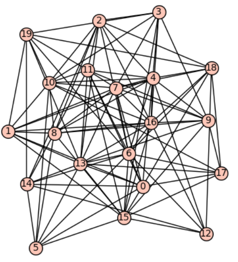

Sam Spiro: Miscellaneous

Math
Non-Math
- A reward will be given to anyone who spots an unintentional erron on this website.
- If you'd like, you can send me an anonymous message, or give me anonymous feedback on anything you think I can improve on.
- My last name is pronounced "Spear-o."
- A few tips and life advice.
- Some of my favorite books, as well as some books worth reading.
- A bunch of bad math puns created for Banach Barski.